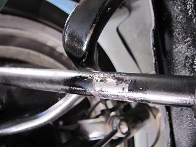
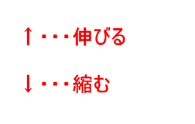
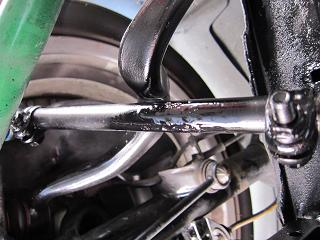
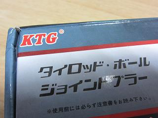

  アライメントを調整してもらって以来、現状がトーアウトなのかトーインなのかが分かるようになった。 調整→運転→調整→運転の繰り返しで根気良く調整していきます。 計測装置は使わずフィーリングで調整していく。 今回は、特に左前がトーアウトになっているような感じだった。 １３ｍｍのナットを２つ緩めて、パイプレンチで真ん中のパイプを回す。 左は↑（後）方向でタイロッドが伸びてトーイン ↓（前）方向で縮んでトーアウトになる。 右はその逆だ。 調整と試乗を6回繰り返した。
|
 工具ではさんで調整すると、塗装がはげてしまう。 そのままでも良いが、錆を防ぐ為に適当な塗料で防錆しておいた。 調整後は轍も‘サラッ’と通過するように戻った。 その後400kmくらい走ったが快調だ＾＾ １度この感覚を知ると完調でないと乗る気がしなくなる。 すっかりダメな身体になってしまった（笑 一度アライメントを取ってフィーリングをつかめば、比較的簡単にできる作業だと思う。 ただ、調整の度にジャッキアップを繰り返すのが面倒くさい(-.-) 調整の際には、アライメントが極端に狂うと、ハンドルが戻らなくなったりするので注意が必要だ。
|
おまけ スラストアームを交換しようと入手したプーラー 「ＫＴＧ」って・・・（笑 あのメーカーのパチもん？！
 |